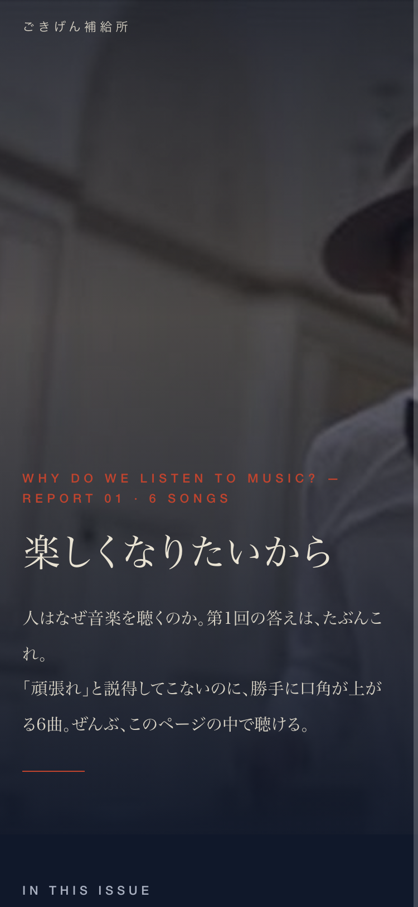
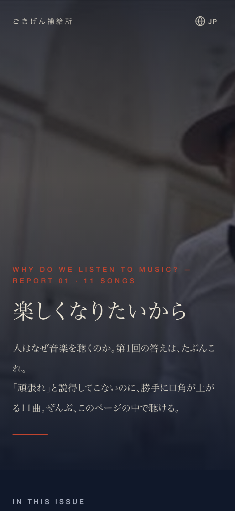

| 確認項目 | 結果 |
|---|---|
| 見た目の統一の関所（unify_look） | PASS |
| 物語の関所（magazine_monogatari_kanmon） | PASS |
| 後退の関所（koutai_kanmon --check-files） | PASS（基準を理由つきで置き直し：kijun_okinaoshi） |
| 本番リポ（joy-relief-station public/magazine）へ置いた | OK（HTML・訳JSON・写真7枚） |
| Lovableの「公開」 | 押せていない（MCPが403・鍵の同意のやり直しが必要）→ 公開待ち |